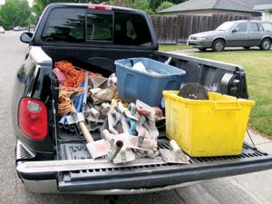
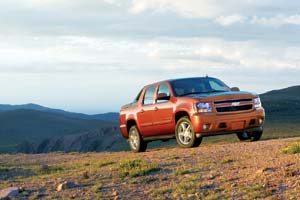

Choose The Right Pickup Truck
With a pickup truck, you can do more, more efficiently.
By Todd Kaho
April/May 2007
For many of us, a pickup truck is essential to sustainable, self-reliant country living. Like a tractor or a pair of fence pliers, a truck is often the best tool to get things done - whether hauling hay or building materials, pulling a trailer of livestock, or moving furniture or other bulky items. With a pickup you’re ready to work anywhere at a moment’s notice.
For these reasons, a pickup is as much an investment in efficient work as it is a means of transportation. Thankfully, most are useful for many years; some are even reliable until they practically fall apart. Many of us know (or even own) a rickety truck that’s long on character - as much rust as paint, tailgate held in place by wire, holes in the floorboard - but nevertheless remains a reliable workhorse. Whether it’s time to finally replace such a pickup or you’re considering buying one for the first time, there are important things to consider, lest you end up with more, or less, truck than you actually need. While there are nearly as many options as there are uses for trucks, the good news is that, compared to their predecessors, modern pickups are much more comfortable and easier on the environment - with cleaner tailpipe emissions and better fuel economy.
Evaluate Your Needs
First and foremost, thoroughly examine your needs. Understanding how you would use a pickup will determine what size and type would be best, or if you really need one at all. Narrow the field by considering your most demanding tasks - the largest loads you will haul or the heaviest trailer you’ll regularly tow. A truck that can handle a load in one trip instead of two will be more economical to operate than one that’s smaller and more fuel efficient, especially when you factor in your time. Heavy loads demand a serious truck for the sake of safety - you need the mass, plus the suspension, power and braking system engineered to handle the weight.
Next, consider how much interior space you’ll need. If the majority of your missions will be solo, go with a standard cab. A bench seat will comfortably seat three adults, though the center passenger’s legroom will be tight given the transmission tunnel. If you regularly need to transport a work crew, the whole family or other precious cargo, opt for an extended cab or a full four-door crew cab. If you’re interested in the bigger cabs, make sure any model you consider also has the bed length you need. Many of the smaller and medium-sized pickups only offer a short bed with the crew cab (6 to 6 1/2 feet). Most of the largest trucks are available with both a full 8-foot bed and a four-door crew cab. The latter makes for a long pickup; one you won’t look forward to parking in town.
Today, there’s a truck for every need. Their popularity for work and personal use has led automakers to create a dizzying assortment of sizes, styles and options. Deciding which one is right for you can be overwhelming given that many models come with different options for cabs, beds, trim packages, engines and transmissions, as well as two- or four-wheel drive.
For all these reasons and more, prices vary widely. But, generally speaking, expect to pay about $15,000 for a basic, small pickup; about $20,000 to $25,000 for a mid-size; $30,000 to more than $50,000 for the biggest beasts of burden.
A New or Used Truck?
For some, it may be best to just borrow or rent a truck as needed. Renting one can be a great option if you only need to move heavy loads a few times a year. At least one of the major automakers has embraced this idea. Toyota recently announced its dealers will have the full-size Tundra available for rent.
Borrowing a pickup from a friend or neighbor is another option, but it’s also a good way to test the friendship - truck owners often become rather attached to their rides. Consider, too, that there’s always the potential for a new scratch or dent in the bed when you’re really using it for work. It’s one thing when you damage your own truck, but something else when it belongs to a friend.
If you’re on a tight budget, or simply don’t want a new pickup, you can find good used options. There’s a glut of used pickups on the market, so prices are reasonable and often quite negotiable. The big advantage to buying used is avoiding the first-year depreciation that new vehicles incur. Generally, the biggest drop in value over the life of a vehicle happens when you drive it off the dealer’s lot. If you plan to keep the pickup for a long time, that’s a moot point. But if you like to switch vehicles every few years, the depreciation can have a big impact. The good news is that there often are significant buyer incentives and rebates. You likely won’t pay sticker price for a new pickup, and if you are good at haggling you may be able to offset some of that initial depreciation.
Buying a used truck requires detective work. In work situations, a truck can go through varying degrees of wear or abuse, so thoroughly research the vehicle’s history. Obvious signs of a hard life can be found in the bed and interior. Have a qualified and trusted mechanic do an inspection to assess its condition. Finding a great price on a used truck won’t mean a thing if it needs a complete brake job or a new transmission a few months later. Also, get the pickup’s vehicle identification number (VIN) and research its history through CarFax or AutoCheck.
Buying used is easy - finding a good truck often is just a matter of time. Pickups aren’t for everyone - some buy them for image reasons and then realize later they don’t actually need or want a truck. This means you can probably find one that’s in great shape and has seen little work use. On the other side, cosmetics will greatly affect a truck’s value. So if you don’t mind a little extra patina, buying one that’s mechanically sound but rough around the edges can save you loads of cash.
Initial depreciation aside, there are many benefits to buying new. A full factory warranty is comforting, and if you have a dealer you trust for routine maintenance, better yet. All things being equal, a new or barely used truck should be less expensive to operate for the first three to five years of ownership. Because all its parts are new, you won’t need to budget for major repairs or unexpected expenses, generally for the life of the factory warranty. By their nature, mechanical things wear out with use, and the harder they are used, the quicker they deteriorate. With a new pickup, you get to choose how well it is maintained - with proper care, it can last for hundreds of thousands of miles.
The recent volatility of fuel prices makes shopping for a new truck more buyer-friendly than in the past - vehicles with low fuel economy can no longer command the higher prices they did a few years ago. Drive a hard bargain with the dealer and you can save thousands.
Research prices and know what you’re willing to pay before any negotiations. Web sites such as Kelly Blue Book and Edmunds.com list both the manufacturer’s suggested retail price (MSRP) and the dealer’s invoice price. This information will help you know how low you can push the price. Kelly Blue Book also is a great resource for estimating the value of a used truck, whether you’re buying it from a dealer or an individual.
How Much Truck?
Next, decide how much truck you need. There are four size classifications: compact, mid-size, full-size and heavy-duty.
Compact pickups offer the best fuel economy, from the high ’teens to the high 20s of mpg, thanks to their lighter weight and smaller engines. Examples include the Chevrolet Colorado, Ford Ranger, GMC Canyon, Mazda B-series, Nissan Frontier and Toyota Tacoma. Each of these models has various trim levels available, including different engine sizes. But you can generally expect payloads of 1,000 to 1,500 pounds, and tow capacity between 2,000 and 5,000 pounds. Compact trucks work well for everyday use, recreation and light-duty chores, but can’t handle major payloads or heavy towing.
Mid-size trucks fill the space between the compact and full-size segments - examples include the Dodge Dakota and trim levels of the Frontier and Tacoma.
Another tweener group includes those that blur the line between a truck and an SUV. Examples include the Chevrolet Avalanche, Ford Explorer Sport Trac and Honda Ridgeline. These trucks vary in size, but each places a premium on interior room and thus they have smaller beds. The Avalanche, though, can “convert” between a truck and an SUV - its rear bed wall is removable to create more room in the bed.
The full-size group is where the real work begins. Examples include the Chevrolet Silverado, Dodge Ram, Ford F-150, GMC Sierra, Nissan Titan and Toyota Tundra. These trucks often are called half-tons, but properly equipped they can carry payloads of up to 2,000 pounds. Their trailer-towing capacity can go up to 10,000 pounds. With standard six-cylinder engines (V6), these pickups offer relatively good fuel economy, from the ’teens to the low 20s for mpg. Eight-cylinder engines (V8) are optional and deliver exceptional power for hauling heavy loads.
For the biggest jobs there are the biggest trucks - the three-quarter and one-ton models that make up the heavy-duty category. Their payloads can exceed 5,000 pounds, and properly equipped models (with a bed-mounted fifth wheel or gooseneck trailer hitch) can tow more than 15,000 pounds. Examples include the Chevrolet Silverado HD, Dodge Ram 2500/3500, Ford F-250/F-350/F-450, and GMC Sierra HD. These trucks offer the option of V10 or diesel engines (more on fuel choices below).
The ability to tow a trailer more than doubles a pickup’s utility. Give careful consideration to the truck’s tow rating and hitch type. If you are considering a new truck, order the factory towing package. In addition to a heavy-duty receiver hitch and wiring for trailer lights, many also include additional suspension upgrades and engine and transmission coolers. Obviously, the bigger the rig, the larger the load it can safely tow. The trailer will determine the hitch type. Bumper pulls are most common, but bed-mounted hitches, such as fifth wheels and goosenecks, are the way to go for the biggest loads. A fifth-wheel hitch locates a large platform in the bed of the truck over the axle to distribute the weight. Unfortunately, this type of hitch is not easily removed and consumes valuable bed space. As an alternative, consider a gooseneck trailer, which has a hitch ball that’s removable or flips down.
Power and Drive
To decide what engine and transmission you need, there are two rules of thumb: First, the base engine will be the most economical choice if you only need to carry or tow light loads. Second, a more powerful engine that isn’t working as hard as weight increases can actually be more economical. Unladen, the bigger engine offers better acceleration at the expense of lower fuel economy. But put a heavy load on the truck and you’ll find that it delivers both superior (safer) performance and better fuel economy simply because it doesn’t need to work as hard to get the load moving and maintain momentum once underway. The old adage of “there’s no replacement for displacement” rings true when work needs to be done. There are numerous engine and transmission combinations available for nearly every model of truck - you won’t want for options.
Historically, manual transmissions generally delivered better control, performance and fuel economy. But that’s changed as automatic transmissions have improved. In some cases an automatic transmission may offer more miles per gallon than its manual counterpart. Many automatics also feature a push-button tow/haul mode that alters the shift points for better acceleration and improved engine braking when slowing down with heavy loads.
Another important decision is two- or four-wheel drive. Unless your primary use for the truck will be simple recreation or really basic work - such as transporting bikes, a bootstrap curbside recycling business or deliveries to a local farmers market - four-wheel drive is probably the way to go. If you live where inclement weather is normal, or you’ll regularly use the truck in off-road conditions, it’s hard to argue against four-wheel drive. Traction can be a problem anywhere from dry areas to a muddy field you need to cross to reach remote pasture. On the downside, four-wheel drive pickups generally deliver slightly lower fuel economy.
Flex Fuel, Hybrid and Electric Trucks
If you’re considering a heavy-duty truck, you’ll have two options for fuel: gas or diesel. Turbo diesel powertrains offer generous horsepower and unmatched torque with good fuel economy, considering the weight of these trucks. There are numerous trade-offs to consider: diesel fuel costs more than gasoline, but that difference has narrowed in recent years; diesel delivers better fuel economy than unleaded, but also more emissions (though petrodiesel fuel has improved significantly; see The New Diesel: Cleaner and Greener). The diesel option also will raise the total cost of the truck. Nevertheless, you may be able to recoup those additional expenses, especially if you consider higher resale value and a diesel engine’s long-term reliability. Another benefit of choosing diesel is the option to use renewable biodiesel.
Several gasoline trucks are flex-fuel, meaning they can use regular gasoline or E85 (85 percent ethanol, 15 percent gasoline). While there is increasing federal support for ethanol production, currently the fuel has limited availability. Furthermore, corn-based ethanol is not a sustainable option for the long term - the true potential for ethanol resides within cellulosic and switch grass sources. Mass production of more sustainable ethanol varieties is at least a few years away.
What about electric power? Currently there are two gasoline-electric hybrid pickups, the Chevrolet Silverado Hybrid and GMC Sierra Hybrid. Compared to hybrid cars, they use a much more modest hybrid drive, which leads to only a 10 percent to 12 percent increase in overall fuel economy. One bonus of these hybrids is that the system’s starter/generator can provide 120-volt AC power through outlets in the cab and bed, making the truck a mobile generator.
Expect more hybrid trucks in the future, including General Motors models with a more robust system. A limited number of the all-electric, zero emissions Phoenix Motorcars SUT (sport utility truck; see photo) will be available in California later this year, with more to follow in 2008. The SUT has a range of 130 miles, can go 95 mph with five passengers and a full payload, and recharges in six hours via a 220-volt outlet. Its lithium-ion battery pack should last for 12 years or 250,000 miles. Expect the SUT to cost about $45,000.
Utilitarian by design, the right pickup is an investment in self-reliant living that will pay dividends for the long haul.
The Right Truck for Your Needs
Pickup trucks complement so many elements of self-reliant country living that it’s hard to imagine life without one. But the sheer number of models and available options can be daunting to wade through. To help you narrow the field, ask yourself the following questions.
Will this be your primary, jack-of-all-trades vehicle? If so, balance utility with interior comforts, but err on the side of enough load capacity. If not, keep in mind that a truck primarily used for work doesn’t need to be fancy.
How much will you use the pickup for missions other than carrying loads? Keep in mind that few things are more uncomfortable to drive than an empty heavy-duty truck. Don’t be swayed by the image of a big pickup if it’s not necessary.
When hauling or towing, what is the maximum load the truck must be able to handle on a regular basis? For work trucks, these considerations trump all others - go heavy and go big if need be.
How many people will you regularly transport? And how far? Interior room is important if you’ll regularly have a crew along. But remember that trucks with larger cabs tend to have smaller beds - don’t skimp on the bed size you really need in order to carry extra passengers only occasionally.
Are you mechanically inclined and able to handle the potential challenges of a used truck? Or do you want the reliability and warranty behind a new truck? A used truck won’t be a bargain if it breaks the bank with mechanical problems.
How can you choose the greenest truck for your needs? Pick a pickup with the best fuel economy you can get for the size you need. Don’t create inefficiencies by buying a bigger truck than you really need, or a smaller one than you really need. Consider a flex-fuel pickup for long-term flexibility. Consider diesel if you need a heavy-duty truck - then consider using biodiesel or converting to run on veggie oil.
Todd Kaho is the senior editor for Green Car Journal and has been an automotive writer for more than 25 years. He homesteads with his family on acreage in the Hocking Hills region of southeastern Ohio.
|
GETTY IMAGES/DON JOHNSTON For many, a pickup truck is essential to sustainable, self-reliant country living. With a pickup truck, you can do more, more efficiently. |
JASON HOUSTON Like a tractor or a pair of fence pliers, a truck is often the best tool to get things done - whether hauling hay or building materials, pulling a trailer of livestock, or moving furniture or other bulky items. |
 JASON HOUSTON Thankfully, most pickups are useful for many years; some are even reliable until they practically fall apart. Many of us know (or even own) a rickety truck that’s long on character - as much rust as paint, tailgate held in place by wire, holes in the floorboard - but nevertheless remains a reliable workhorse. |
|
GENERAL MOTORS When evaluating different pickups, carefully consider how much room you’ll need in the bed and the cab. Many pickups with larger cabs have shorter beds. |
 ISTOCKPHOTO/CAROL MATTSSON Today, there’s a truck for every need. Their popularity for work and personal use has led automakers to create a dizzying assortment of sizes, styles and options. |
CLARKE SNELL 1986 Mazda B-2000 Pickup Truck |
|
 GENERAL MOTORS 2007 Chevrolet Avalanche Pickup Truck |
TOYOTA 2007 Toyota Tundra Pickup Truck |
HONDA 2007 Honda Ridgeline Pickup Truck |
|
WWW.RONKIMBALLSTOCK.COM 2002 Chevrolet Silverado and 1965 Chevrolet C-10 |
FORD If you’ll regularly tow livestock or move heavy cargo, opt for a full-size or even heavy-duty truck. The biggest trucks have optional 10-cylinder or turbo diesel engines. |
PHOENIX MOTORCARS Electric horsepower: The new Phoenix SUT runs on lithium-ion batteries, with a range of 130 miles and a top speed of 95 mph. |